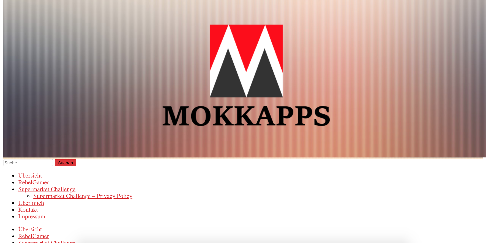
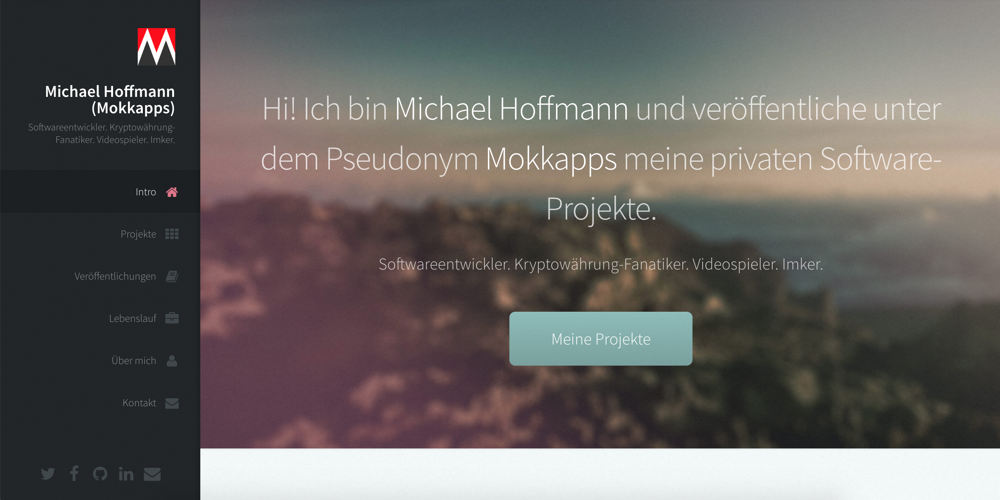
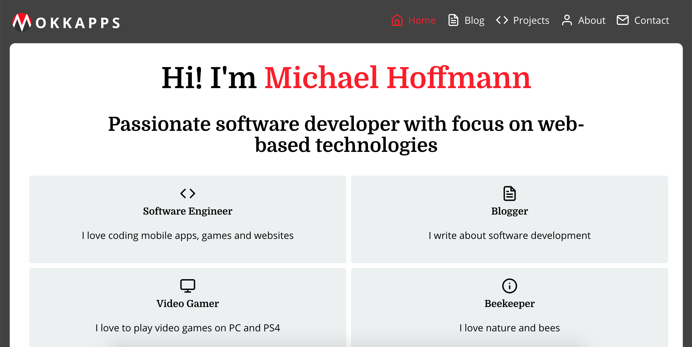
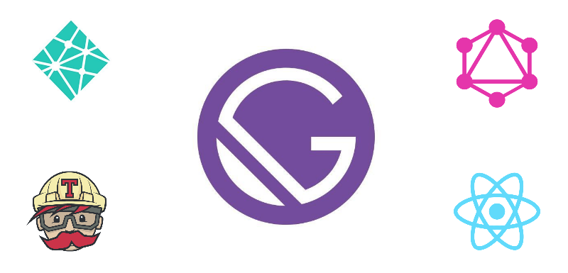
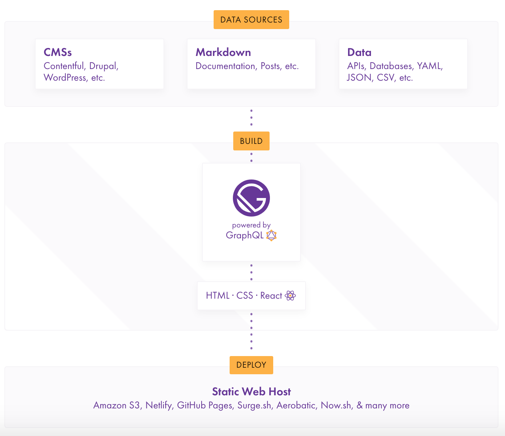
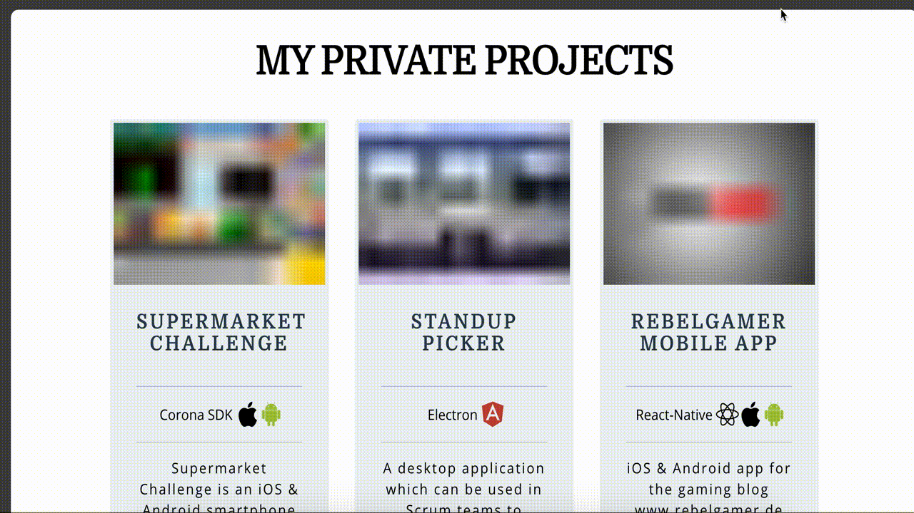
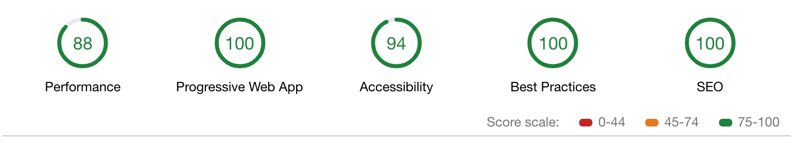

OKKAPPS
The Engineering Behind My Portfolio Website
Michael Hoffmann (@Mokkapps)
2017: Version 1
based on WordPress
End 2017: Version 2
based on Hugo (static site generator)
2018: Version 3
https://mokkapps.de Tech Stack Version 3
GatsbyJS: Static Site Generator
Responsive Images
"gatsby-image" plugin Styled Components
import React from 'react';
import PropTypes from 'prop-types';
import styled from 'styled-components';
const StyledArticle = styled.article`
max-width: 600px;
margin: 0 auto 30px;
background: white;
border-radius: 10px;
padding: 2rem;
min-width: ${props => (props.narrow ? '50%' : '100%')};
`;
const Article = ({children}) => ({children} ));
Article.propTypes = {
children: PropTypes.node.isRequired,
};
export default Article;
Blog
- Articles are written in Markdown
- Posts, categories and web pages are automatically created from Markdown files
Hosting
NetlifyThe all-in-one platform for automating modern web projects
Continuous Integration
Deploy & test my website each time I push to my git master branch
Configuration example (travis.yml):
script:
- npm run lint
- npm run test:e2e:ci
- npm run build
deploy:
provider: script
script: "curl -X POST -d '' https://api.netlify.com/build_hooks/5ba3c8da1f12b70cbbcaa1a3"
skip_cleanup: true
on:
branch: master
E2E Tests
CypressLive Deployment Demo
Open-source error tracking that helps developers monitor and fix crashes in real time
Google Lighthouse Score
Conclusion
- I am proud of the result
- No costs for the used software
- Good promotion platform for myself
Related Blog Post
📝 New blog post:
— Michael Hoffmann (@Mokkapps) December 13, 2018
"The Engineering Behind My Portfolio Website" https://t.co/L6NYuyyVpl